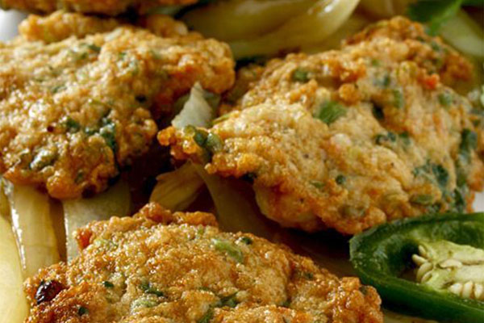
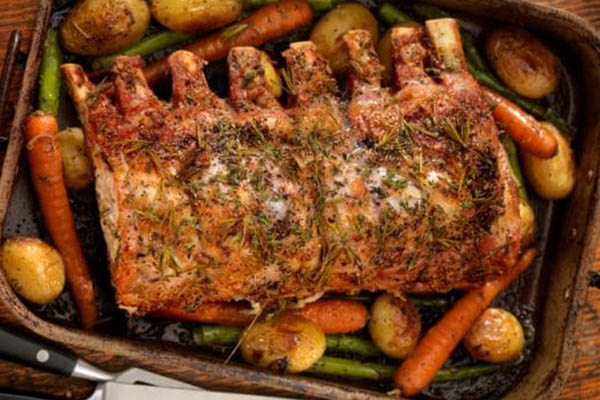

Address: 65 Đường số 1, Phường 26, Bình Thạnh, Hồ Chí Minh City 700000
Tel: 028 6294 8387
Drive folder: https://drive.google.com/drive/folders/1uR4KrgSfQCiMGCu8z7Z8LtY-UvAG_bNX
Website: món ngon mỗi ngày - daotaobeptruong
Twitter: https://twitter.com/i/moments/1253170873273430017
Google site: https://sites.google.com/site/daotaobeptruongaauvn/mon-an-ngon
Có thể bạn đã biết, mùa hè nóng nực là thời điểm những món ăn thanh mát từ rau được ưu tiên hơn cả. Các món ăn mặn cũng không sử dụng nhiều dầu mỡ sẽ tốt cho sức khỏe hơn. Với những món ăn ngon dưới đây, bạn không còn phải băn khoăn hôm nay cả nhà ăn gì nữa. Những món ngon mỗi ngày này đều được chế biến cực nhanh, đầy đủ dinh dưỡng cho gia đình.
Đăng ký học nấu các món ngon tại Đào Tạo Bếp Trưởng
Địa chỉ món ngon mỗi ngày tại Đào Tạo Bếp Trưởng Á Âu
Một thực đơn chế biến nhanh và đủ dinh dưỡng sẽ bao gồm những gì nhỉ. Đây là mâm cơm sẽ giúp bạn không mất quá nhiều thời gian cho việc bếp núc mà vẫn ngon miệng:
Thử thực hiện một mâm cơm trong vòng 30 phút xem nào. Đây là mâm cơm ưu tiên rau xanh nên ăn thanh mát, nhẹ nhành, đưa cơm. Bạn sẽ không phải lo ngán ngấy với những món ăn ngập trong dầu mỡ. Mâm cơm gồm những món:
Giới thiệu thêm về chương trình học nấu các món ngon mỗi ngày tại Đào Tạo Bếp Trưởng Á Âu
Những nguyên liệu quen thuộc nhưng cách chế biến khác nhau sẽ giúp cho bữa cơm của gia đình bạn luôn có những hương vị mới mẻ. Hãy hâm nóng tình cảm gia đình với một bữa cơm ấm cúng gồm những món sau:
Nhìn mâm cơm bên dưới, liệu tinh thần ăn uống của bạn đã đi lên chưa? Chắc hẳn bạn cũng nắm rõ cách chế biến những món xào ngon mỗi ngày quen thuộc này rồi nhỉ?
Video dạy nấu các món ăn ngon hàng ngày
Các món ăn từ thịt lợn luôn gần gũi với chúng ta nhất. Có rất nhiều món ngon từ thịt lợn bạn có thể tham khảo thực đơn dưới đây:
Bữa cơm dành cho 2 người không bị xem là sơ sài nếu bạn áp dụng mâm cơm như gợi ý dưới đây. Đây là thành quả của một bà mẹ khoe trên diễn đàn hội cha mẹ và rất được hưởng ứng bởi sự đơn giản, đẹp mắt mà vẫn đầy đủ dinh dưỡng:
Thịt lợn và cá là những thực phẩm bổ dưỡng đã quá quen thuộc trong mâm cơm của người Việt. Cho dù bạn ở bất cứ vùng miền nào, mâm cơm dưới đây đều phù hợp cho gia đình của bạn. Rau sống đi kèm với canh chua cũng được xem là sự kết hợp thông minh giúp cho mâm cơm thêm đậm đà hương vị:
Với gợi ý thực đơn những món ăn ngon mỗi ngày đã liệt kê ở trên, các thành viên trong gia đình bạn sẽ luôn được thưởng thức những bữa ăn có các món khác nhau. Đây còn là những mâm cơm giàu dinh dưỡng, đơn giản lại siêu tiết kiệm, là chương trình món ngon mỗi ngày mà DTBTAAu đã và đang thực hiện trong thời gian gần đây. Mong được các bạn ủng hộ.
Món Kho Chay Ngon Mỗi Ngày - DaoTaoBepTruong